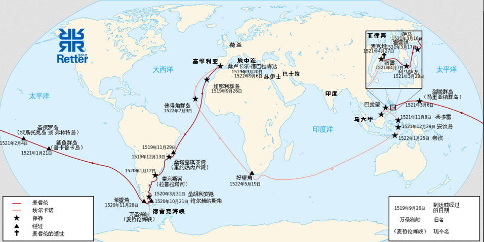

返回主页
全球化的历史

One Piece Map
One Piece 航海
麦哲伦航海的主要任务是打通亚洲贸易航线，而具体目标是要找的Kepulauan Maluku（“东印度群岛”）。Maluku位置处于菲律宾以南、苏拉威西岛以东、新几内亚西面，传统上称为“香料群岛”（Spice Islands）。The Maluku Islands （Moluccas）， they are located east of Sulawesi, west of New Guinea, and south of Philippines.
西班牙没能从葡萄牙人那里抢到手，最终香料群岛由荷兰人控制。但是，西班牙通过菲律宾中转，在中国和拉美墨西哥之间的贸易上赚了很多钱。这就是马尼拉大帆船贸易：The Manila Galleon Trade (1565�C1815)
version:1.0; jobnet@188.com © retter2012.com